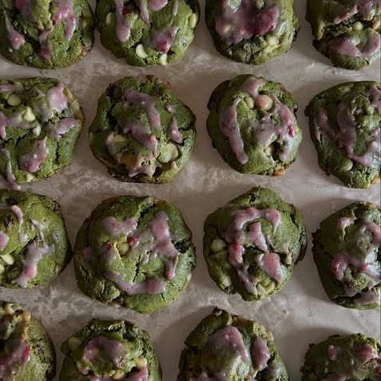

Earthy matcha balanced by creamy white chocolate and tang of strawberry.
They’re easy to make and bake up beautifully with a little crisp edge and a tender center.
⏱️ 1 hour 5 minutes🍽️ 8 servings

Equipment
Fine mesh sieve (for matcha and flour)
Baking sheets
Parchment paper
Ingredients
8 Tbsp (1 stick) unsalted butter, room temperature
100 g brown sugar
100 g granulated sugar
2 g salt (about ½ tsp)
1 tsp baking powder
1 tsp baking soda
2 large eggs, cold
290 g all-purpose flour
12 g (2 Tbsp) ceremonial matcha powder
200 g white chocolate, chopped or chips
20–24 g freeze-dried strawberries
2 tbs powdered sugar
4 tbs powdered sugar
2 tbs milk
Directions
Make the Dough:
In a large bowl, cream together the butter, brown sugar, granulated sugar, and salt using a hand mixer until light and fluffy.
Add the eggs one at a time, mixing just until combined.
In a separate bowl, sift together the flour, matcha powder, baking powder, and baking soda.
Add the dry mixture to the wet ingredients and mix until just combined — do not overmix.
Fold in the white chocolate and freeze-dried strawberries.
Portion the dough into 4 oz balls. If desired, press a few strawberry pieces onto the tops for garnish (see notes below).
Chill the Dough:
Place the dough balls on a tray or plate, cover, and refrigerate for at least 2 hours (or overnight). Chilling helps the cookies hold their shape and enhances flavor.
Bake:
Preheat oven to 350°F (175°C).
Line baking sheets with parchment paper.
Place chilled dough balls several inches apart (these cookies spread as they bake).
Bake for 17–19 minutes, until the edges are lightly golden but the centers still look soft.
If using a gas oven, bake on the middle rack. For electric ovens, use the lowest rack for even browning.
Cool and Serve:
Allow cookies to cool completely on the baking sheet before serving.
They’ll continue to set as they cool, creating a perfectly chewy center with crisp edges.
Add Optional Icing:
Whisk together powdered sugar, and milk and crushed freeze dried stawberries until smooth.
Drizzle over the cooled cookies.
Notes
Garnish tip: If topping cookies with freeze-dried strawberries, bake on the middle-lower rack to prevent browning.
After 10–12 minutes of baking, place an empty baking sheet on the rack above to act as a heat shield and prevent the strawberry garnish from burning.
Allow cookies to cool completely before serving — they’ll continue to set as they cool.